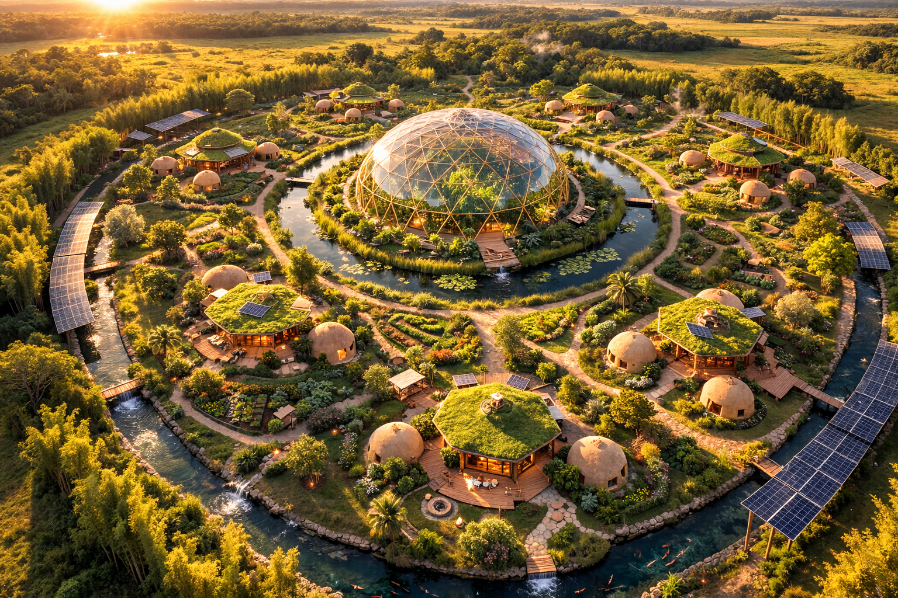
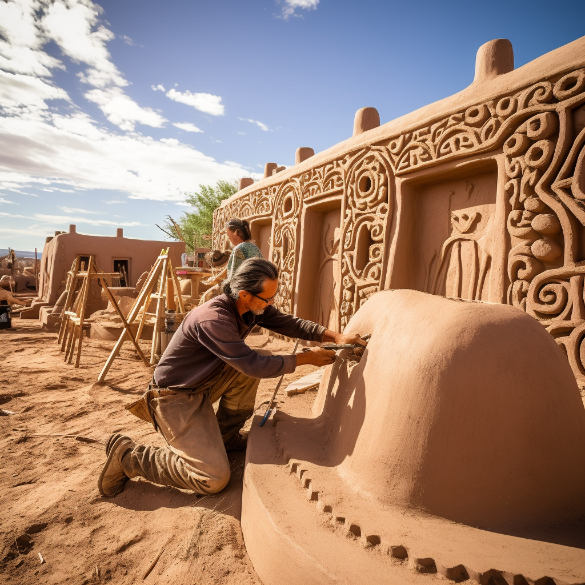

A festival that doesn't burn what it builds.
A recurring gathering that leaves behind not ashes, but life.
Each time it returns, the land grows. Homes rise. Greenhouses bloom.
Gardens take root. Schools open their doors.
Until the festival becomes a village,
and the village becomes a civilization.
I get Burning Man, I really do. The radical self-expression, the impossible structures, the temporary city that pulses with life for a week and then vanishes. It's beautiful. But the desert still remains a desert.
What if a festival could leave something behind for the good of the earth and mankind? What if it could breed something that grows life? What if thousands of people gathered not just to celebrate, but to build — and what they built kept growing long after the music stopped?
This is Breathing Land. A recurring festival that returns to the same location, and each time it does, it leaves behind a small stone. Over the years, those stones become a castle. A living, breathing settlement that grows and matures with every gathering — a green city where urban and rural are not separated spatially, but feed from one another in a productive and regenerative way.

Thousands meet on a chosen piece of land. Musicians, builders, permaculturists, engineers, dreamers, families. They come to learn, to work, to celebrate, to meditate, and to rest.
During the festival, participants construct real infrastructure — ecological compound homes, productive greenhouses, food forests, water systems, renewable energy. Not temporary art. Permanent life.
When the festival ends, the structures stay. The gardens keep growing. Some people stay too. With each edition, the settlement expands — more homes, more food, more community, more life.
The festival comes back. The new arrivals find a village where there was once bare land. They add another layer. Another ring of homes. Another guild of families. The land breathes deeper each time.

Self-sufficient settlement units designed for ~960 people, organized into guilds of extended families. Each cell has its own energy, water, food production, and governance — a complete circular economy.
Clustered family homes built with natural materials, surrounded by productive gardens. Shared courtyards, communal kitchens, and workshop spaces where craft and daily life intertwine.
Year-round food production under glass domes at the heart of each guild. Aquaponics, nurseries, and climate-controlled growing — the engine that feeds the settlement through every season.
Learning spaces where children from around the world study regenerative design, ecology, music, and the art of building a civilization. Not classrooms — living laboratories.
Food forests, silvopasture, rotational grazing paddocks, and medicinal gardens. The landscape itself becomes the market, the pharmacy, and the cathedral.
Agoras for assembly. Markets for exchange. Concert halls for celebration. Workshops for craft. The bones of a culture that doesn't need to import its meaning from elsewhere.
At its core, I see a green school with children from all over the world; fairs, markets, concerts and artwork everywhere. But what takes my breath away is that I see the possibility of a thriving and sustainable human settlement where people are learning and celebrating, working and nurturing — leaving dozens of ecological compound homes and productive greenhouses behind; all merging into a landscape surrounded by gardens, water, orchards, animals, and the feeling of home.
Breathing Land is being designed as part of the Rubania project and the Gaia Sapiens initiative. The first edition will take place in Uruguay.
If this vision moves you — as a builder, musician, farmer, engineer, educator, filmmaker, or simply as a human who wants to help — reach out.